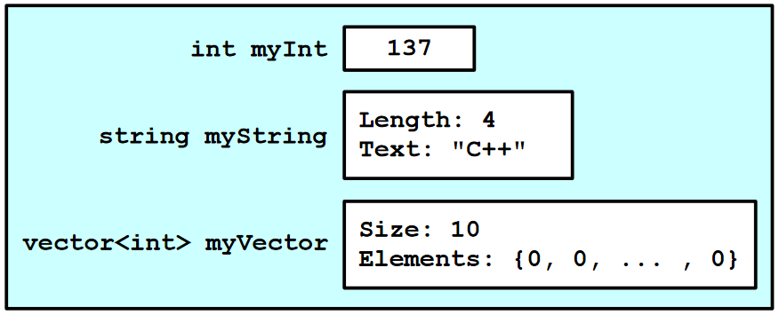

6.Introduction to Class
一、Classes简介
- 头文件（.h）VS 源码（.cpp）
- 构造函数
- 析构函数
- 操作符重载
- const
1.1 头文件(.h)
1.2 源码(.cpp, .cc, etc.)
1.3 构造函数
构造函数可分为带参数和不带参数两种类型，其调用方式示例如下：
1 | |
但是，使用下列代码并不能正确调用不带参数的构造函数：
1 | |
该语句被编译器解释为一个函数声明，而非使用默认构造函数实例化对象。为了调用默认构造函数，应直接使用对象名而不加任何括号；若需调用带参数的构造函数，则需在括号内指定参数。
关于默认构造函数
当一个类被定义但未显式声明任何构造函数时，C++会自动生成一个默认无参构造函数，这个构造函数基本上不执行任何操作。
但是，一旦在类中定义了至少一个构造函数（无论是带参数还是不带参数的），C++将不再自动生成默认的无参构造函数。这可能导致在未明确定义无参构造函数的情况下尝试实例化类时遇到问题，如下例所示：
1 | |
在这种情况下，若需要使用无参构造函数，必须自行定义之，或确保使用已定义的带参数构造函数进行对象的初始化。
1.4 析构函数
1.5 操作符重载
二、Const Correctness
2.1 Const Member Functions
- 类通常包含const和非const成员函数。const对象仅可调用const成员函数。
- 在const成员函数内，类的所有成员变量都被视作const，允许读取但禁止修改。
- const成员函数不能调用非const成员函数，以防止间接修改对象状态。
示例：定义Point类的const成员函数
1 | |
2.2 Const References
- 使用const引用作为函数参数可以防止该函数修改传入的对象。
- 即使传递给函数的原始对象不是const，函数内部也会将其视为const，确保对象内容的不可变性。
- 可以将非const对象传递给接受const引用的函数，但不能将const对象传递给仅接受非const引用的函数，因为这违反了const的约束。
示例：使用const引用作参数的函数
1 | |
- 这种设计允许既可以传递const对象也可以传递非const对象到函数
PrintVector，但在函数内部，vec始终被视作const，保障了数据的安全性和不变性。 - 采用const引用作为参数的做法不仅可以提高程序的安全性，还可以避免不必要的对象复制，提高效率。
2.3 Const and Pointers
在C++中，const和指针结合使用时，主要涉及两种情形：指向常量的指针（pointer-to-const）和常量指针（const pointer）。
- 指向常量的指针（pointer-to-const）：这种指针可以指向一个常量数据，不允许通过指针修改其指向的数据，但允许指针本身改变，即可以指向另一块数据。
- 声明方式：
const Type* myPointer或Type const* myPointer。 - 关键点：指针可以重新指向不同的地址，但不能通过指针修改所指向的值。
- 声明方式：
- 常量指针（const pointer）：这种指针的指向一旦设定就不可改变，但它指向的数据值是可以修改的（除非指向的数据本身被声明为const）。
- 声明方式：
Type* const myConstPointer。 - 关键点：指针的指向固定不变，但所指向的数据可以修改。
- 声明方式：
区分这两者的简单方法是观察const关键字与*符号的位置关系：
- 指向常量的指针：
const位于*的左侧。 - 常量指针：
const位于*的右侧。
技巧：从右向左读变量声明可以帮助记忆：
const int* ptr：从右向左读为 "ptr is a pointer to a int that is const"。int * const ptr：从右向左读为 "ptr is a const pointer to a int"。
指向常量的指针既可以指向const变量，也可以指向非const变量；而常量指针则主要关注指针本身的不变性，而非所指数据的不变性。
总结：
2.4 Const Iterators
迭代器在C++中被广泛用于遍历容器元素，其用法和行为与指针非常相似。然而，迭代器与指针在const性质上的表现有所不同。
- 迭代器的const性质：
- 声明为
const vector<int>::iterator itr的迭代器，其行为类似于常量指针int* const itr，而不是指向常量的指针const int* itr。这意味着你可以修改迭代器指向的值，但不能改变迭代器本身的指向。 - 要创建一个只能读取元素但不能修改它们的迭代器（类似于
const int* itr），应使用const_iterator。
- 声明为
示例说明：
1 | |
- 对于const对象或const引用的容器，应使用
const_iterator来遍历其元素，以确保遍历过程中不会意外修改容器内容。 const_iterator的支持是通过容器类中const重载的begin()和end()方法实现的，这些方法在容器对象为const时返回const_iterator，确保了只读访问。
容器类的const_iterator实现：
1 | |
通过这种方式，C++为容器元素的遍历提供了灵活的读写控制，同时确保了代码的安全性和可维护性。
2.5 Mutable关键字
在C++中，const成员函数表明该函数不会修改对象的任何成员变量。然而，有些情况下，我们可能需要在const成员函数内部修改某些成员变量的状态。这时，mutable关键字就派上用场了。
使用mutable声明的成员变量可以在对象的const成员函数中被修改。这允许开发者在不破坏对象外部不可变承诺的前提下，灵活处理内部状态。
考虑一个需要缓存昂贵计算结果的类CachedData。为了在对象被声明为const时仍然能更新缓存，我们可以将缓存相关的成员变量声明为mutable。
示例：
1 | |
在这个例子中，尽管CachedData的实例可能被声明为const，compute方法仍可更新cacheValue和cacheValid。这是因为这两个成员变量被声明为mutable，从而使得我们能够在保持对象外观不变性的同时，提高内部处理效率和灵活性。
三、构造函数：成员初始化列表
3.1 C++对象构造过程
在C++中，对象的构造过程，如果不借助成员初始化列表，一般遵循以下步骤：
- 内存分配：对象所需的内存空间被分配，此时成员变量尚未初始化，可能含有未定义的值。
- 默认构造：为成员变量调用默认构造函数。对于基本类型，这一步不改变其未定义的状态；对于类类型，调用其默认构造函数。
- 赋值操作：执行构造函数体中的赋值操作，对成员变量进行初始化。
这个过程中，类类型的成员变量可能会经历两次初始化：首先是默认构造，随后是在构造函数体内的显式赋值。
3.2 不使用初始化列表的构造示例
1 | |
- 获得足够的空间来容纳对象的所有数据成员。此时数据成员都为垃圾值：
- 调用每个实例变量的默认构造函数。对于基本类型而言，依然保持垃圾值：
- 调用构造函数来进行初始化：

在这个例子中，myString和myVector在被赋予新值前，已通过默认构造函数被初始化一次，导致效率降低。
3.3 使用成员初始化列表优化
使用成员初始化列表可以在构造对象时更加高效和直接地初始化成员变量，避免不必要的二次初始化。
改进后的构造函数：
1 | |
通过使用成员初始化列表：
- 成员变量
myInt、myString和myVector在构造函数体执行之前直接初始化为指定的值。 - 提高了构造过程的效率，尤其是对于类类型成员变量而言，避免了不必要的默认构造和后续赋值步骤。
3.4 使用初始化列表的必要场景
在C++中，某些情况下使用成员初始化列表不仅是提升效率的做法，而且是必须的。这主要包括以下两种情况：
- 初始化const成员变量
const成员变量一旦被定义，就必须立即初始化，而且之后不能再被修改。因此，必须在构造函数的初始化列表中对它们进行初始化。如果试图在构造函数体内赋值给const成员变量，编译器会报错。
示例：
1 | |
- 初始化没有默认构造函数的类类型成员
如果类的成员是另一个类的对象，且该类没有提供无参的默认构造函数（或者你需要调用一个特定的构造函数来初始化该成员），那么你必须通过初始化列表来初始化这些成员变量。
示例：
1 | |
在这些场景中，成员初始化列表是初始化成员变量的唯一方法。它确保了即使在复杂场景下，对象的构造也能正确、高效地完成。
四、使用Static共享类信息
4.1 静态数据成员 (Static Data Members)
静态数据成员允许类的所有实例共享同一份数据。这意味着无论创建了多少个实例，静态成员只有一个副本。修改静态成员的状态将影响到所有实例。
声明和定义：
- 声明：在类定义中声明静态成员，但不分配存储空间。
1 | |
- 定义：在类外部定义静态成员，并初始化其值。此步骤为静态成员分配存储空间。
1 | |
注意：定义时使用类的全限定名（MyClass::myStaticData），并省略static关键字。
4.2 静态成员函数
静态成员函数不依赖于类的实例，因此没有this指针。它们只能访问静态数据成员和其他静态成员函数。
用法示例：
1 | |
静态成员函数可以通过类名直接调用：Point::compareTwoPoints(a, b);。
4.3 静态常量 (static const)
静态常量成员在所有实例间共享同一常量值，通常用于定义类级别的常量。
声明和初始化：
1 | |
这种初始化方式主要适用于整型常量。对于非整型的静态常量（如double或float），你可能需要在类外部进行定义。
五、 static_cast和const_cast
在C++中，经常需要为类成员函数提供const和非const版本，以支持不同的使用场景。
std::vector的at()函数就是一个典型例子，其中const版本返回元素的const引用，而非const版本则返回一个可修改的引用。为了减少代码冗余并保持逻辑一致性，可以利用static_cast和const_cast进行优雅的实现。
5.1 static_cast
- 用途：
static_cast主要用于基本数据类型之间的转换，以及相关类类型之间的向上和向下转换，但不涉及运行时类型检查。 - 特点：提供编译时类型安全检查，但不如
dynamic_cast严格。
5.2 const_cast
- 用途：
const_cast专门用于修改类型的const或volatile属性，是实现const和非const成员函数共享实现的关键。 - 特点：能够添加或去除对象的
const性质，但使用时需要谨慎以避免未定义行为。
5.3 示例
假设有一个Vector类，我们希望共享const和非const版本的at()函数实现：
1 | |